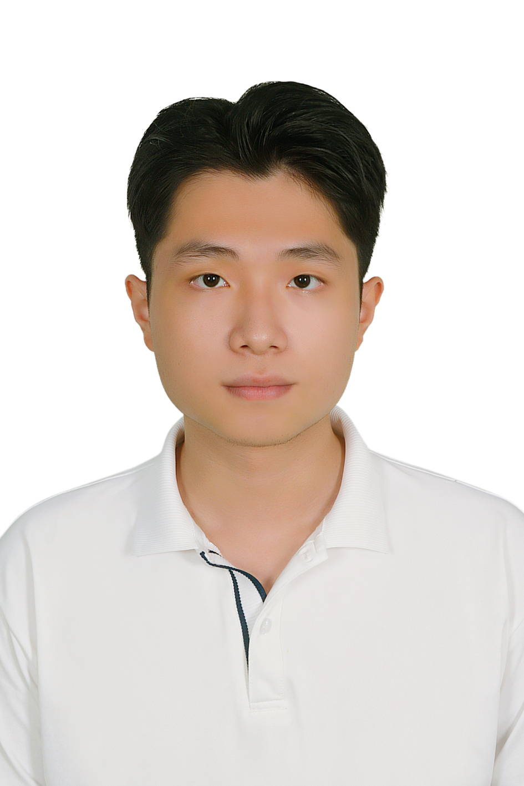

Hello, I'm
B.Sc. Computer Science (Honor Programme) at VNU-HCMUS
My research lies at the intersection of 3D vision, multimodal understanding, and spatial reasoning. I build systems that jointly reason over geometry, appearance, and language in dynamic, real-world environments.
I am currently a third-year undergraduate in the IT Talent Programme at the University of Science, VNU-HCM (HCMUS) — admitted among the top 45 students selected faculty-wide, maintaining a GPA of 3.94/4.0.
I am broadly interested in building systems that jointly reason over geometry, appearance, and language. Systems capable of understanding not merely what a scene looks like, but what it contains, how it is structured, and how it relates to the world described in natural language.
I see 3D Gaussian Splatting as a particularly compelling representation for this kind of understanding. My goal is to push GS-based representations beyond novel view synthesis toward richer scene understanding—enabling object-level reasoning, part-level retrieval, and language-grounded spatial analysis in dynamic, real-world environments.
B.Sc. Computer Science
Expected May 2027 (GPA: 3.94/4.0)
3D Vision, Multimodal Understanding, Spatial Reasoning
Saigon AI Hub (SAIH), Applied AI Lab (Google Labs' AI Futures Fund)
Selected into one of 10 inaugural research groups at SAIH — Vietnam’s first open AI research hub. Conducting research on multimodal sport reasoning and analysis: building models that integrate visual, temporal, and language signals to understand and reason over complex sports scenarios in video.
Software Engineering Lab (SELab), HCMUS
Supervised by Prof. Minh Triet Tran. Led work on metric-scale athlete localization from single broadcast frames (1st place on SoccerNet 2026 Spiideo SynLoc). Contributed to TreeSoc for tree-structured video reasoning, automated news thumbnail generation, and event-centered lifelog retrieval.
AI City Workshop @ ECCV 2026
Proc. ICMV 2026 (CORE C; SPIE-indexed)
Proc. ICMV 2026 (CORE C; SPIE-indexed)
Proc. ACM LSC Workshop @ ICMR 2026 (CORE B)
Proc. SOICT 2025
Computers & Graphics (Elsevier, Q2), Vol. 132
International sports AI benchmark for single-frame world-coordinate athlete localization; 97.67 mAP, surpassing baseline by over 21%.
Tri-modal explainable deepfake forensics benchmark at ACM Multimedia (CORE A*).
Selected from all accepted submissions at the HCMUS university-level Youth Science Conference.
Nationally selective scholarship for exceptional academic merit in Vietnam (Awarded in 2023 & 2026).
Ranked in the top 3% (2024) and top 2% (2025) of students in the faculty for academic excellence.
Top prize tier awarded to 12–15% of all national finalists across Vietnam (2023).